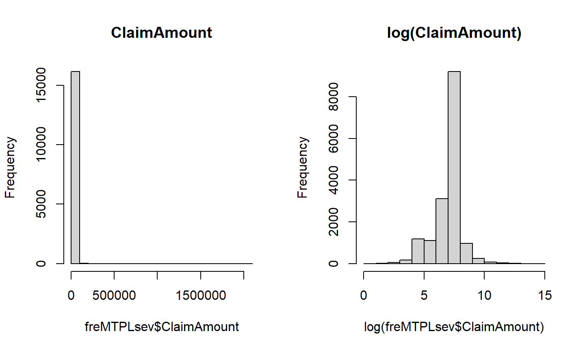

Alternativas para Modelo para a Frequência
Modelos para a Severidade
Modelos conjuntos para Frequência e Severidade
08 de julho de 2022
Alternativas para Modelo para a Frequência
Modelos para a Severidade
Modelos conjuntos para Frequência e Severidade
Vimos na aula passada como construir um modelo para encontrar o prêmio puro de acordo com um modelo coletivo para a perda financeira coberta por um seguro.
Vimos também que para uma seguradora ser competitiva, ela precisa levar em conta as informações disponíveis (covariáveis) para obter uma estimativa mais precisa para a perda média de cada contrato.
\[\pi(\boldsymbol x) = \mathbb{E}(N|\boldsymbol X = \boldsymbol x) \cdot \mathbb{E}(Y|\boldsymbol X = \boldsymbol x) \]
Uma opção é modelar cada termo separadamente:
\(\mathbb{E}(N | \boldsymbol{X}=\boldsymbol{x})\): frequência esperada de indenizações para segurados com características \(\boldsymbol{x}\); e
\(\mathbb{E}(Y | \boldsymbol{X}=\boldsymbol{x})\): severidade, ou custo médio das indenizações para segurados com característica \(\boldsymbol{x}\).
O modelo mais natural para a frequência (número esperado de indenizações) é o Poisson.
Limitação: ao assumir que \(Y_i \sim \mbox{Poisson}(\lambda_i.\,E_i)\), temos que \(\mathbb{E}(Y_i) = \mbox{Var}(Y_i) = \lambda_i.\,E_i\).
Uma alternativa é modelar a variância como:
\[\mbox{Var}(Y_i) = \phi .\, \mu_i \]
Também podemos assumir outras distribuições de probabilidade para \(Y_i\), como:
Binomial Negativa (Seção 14.4.1);
Poisson/Binomial Negativa inflacionada em zero (Seção 14.4.2);
outras (Seção 14.4.3).
Veja as seções indicadas para funções e exemplos para estimar os parâmetros de acordo com esses modelos.
Vamos agora ver modelos apropriados para a severidade \(\mathbb{E}(Y|\boldsymbol{X}=\boldsymbol{x})\).
As ferramentas são as mesmas de antes: Modelos Lineares Generalizados.
Além disso, normalmente as covariáveis são mais informativas para prever a frequência do que a severidade.
Carregar o banco de dados freMTPLfreq com os dados de frequência, exposição e as covariáveis (motor do carro, idade do carro, idade do motorista, modelo do carro, tipo de combustível, região da residência, densidade populacional).
Carregar o banco de dados freMTPLsev com os dados de severidade (valor das indenizações) para as apólices em que houve sinistro. Quais são as variáveis disponíveis nesse banco?
## tamanho dos bancos dim(freMTPLfreq)
## [1] 413169 10
dim(freMTPLsev) # nem todas as apólices tiveram indenizações
## [1] 16181 2
sum(freMTPLfreq$ClaimNb>0)
## [1] 15390
ids = freMTPLsev$PolicyID # apólices com indenizações length(ids)
## [1] 16181
length(unique(ids))
## [1] 15390
sum(freMTPLfreq$PolicyID %in% ids)
## [1] 15390
## distribuição da severidade summary(freMTPLsev$ClaimAmount)
## Min. 1st Qu. Median Mean 3rd Qu. Max. ## 2 698 1156 2130 1243 2036833

## Unificando os bancos claims <- merge(freMTPLsev, freMTPLfreq) claims.f <- merge(freMTPLsev, freMTPLfreq.f)
merge unifica os bancos?Como vimos anteriormente, selecionamos apenas as apólices em que houve pagamento de indenizações.
ClaimAmount dos bancos de dados que acabamos de criar.\[f(y) = \frac{1}{y.\, \Gamma(\varphi^{-1})} \left( \frac{y}{\mu \varphi}\right)^{\varphi^{-1}} \exp \left( - \frac{y}{\mu \varphi}\right), \quad \forall \, y \in \mathbb{R}_{+}. \]
\[f(y) = \frac{1}{y \sqrt{2 \pi \sigma^2}} \exp\left\{ - \frac{(\ln y - \mu)^2}{2 \sigma^2}\right\}, \quad \forall \, y \in \mathbb{R}_{+}. \]
## Regressão Gama (para indenizações menores)
reg.gamma <- glm(ClaimAmount ~ CarAge + Gas, family=Gamma(link="log"),
data=claims[claims$ClaimAmount<15000,])
summary(reg.gamma)
## Regressão Log-Normal
reg.logn <- lm(log(ClaimAmount) ~ CarAge + Gas,
data=claims[claims$ClaimAmount<15000,])
summary(reg.logn)
Outra alternativa: Normal Inversa
O ajuste dos modelos deve ser comparado usando os instrumentos padrões de Modelos Lineares Generalizados.
Se os valores das indenizações não forem muito grandes, as regressões gama e log-normal serão bem próximas (como vimos no exemplo anterior).
No entanto, quando temos indenizações com valores grandes, os ajustes serão diferentes.
## Regressão Gama (para todos os valores)
reg.gamma <- glm(ClaimAmount ~ DriverAge,
family=Gamma(link="log"), data=claims)
summary(reg.gamma)
## Regressão Log-Normal
reg.logn <- lm(log(ClaimAmount) ~ DriverAge, data=claims)
summary(reg.logn)
Nesse caso, os coeficientes são significativos nos dois modelos, mas com sinais diferentes (o efeito de aumentar a idade será diferente).
Isso acontece porque os outliers irão afetar o ajuste dos modelos.
Para isso, seria necessário considerar modelos mais robustos para a tarifação. Para mais discussão sobre isso: Seção 14.6.
Vamos finalizar considerando um modelo conjunto para frequência e severidade.
A alternativa mais comum é o modelo Tweedie.
A distribuição Tweedie pertence à família exponencial e satisfaz a seguinte condição:
\[\mbox{Var}(Y) = \varphi\,.[\mathbb{E}(Y)]^p \]
Se \(p=0\), temos uma distribuição com a variância constante (dist. normal);
Se \(p=1\), então a variância é linear (dist. Poisson);
Se \(p=2\), temos uma função de variância quadrática (dist. Gama);
Se \(p \in (1,2)\), então \(Y\) tem uma distribuição composta Poisson-Gama.
tweedie:Encontrar o valor de \(p\): usar a função tweedie.profile para encontrar o EMV para \(p\) para um determinado modelo.
Usar o valor para estimar a regressão: função glm(..., family=tweedie(var.power=p)).
cplm.